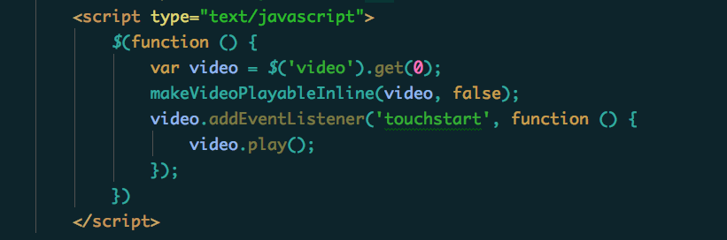

关于如何禁止 iPhone Safari 视频自动全屏？
如果在工作中有遇到过用HTML5开发视频播放的需求,估计有同学会知道webkit-playsinline这个属性。微信支持这个属性，但是safari 10以下的版本是不支持的，而2016.6.16更新了IOS10,原生的支持了。 不过我打开自己的iphone 6+,翻了好久,一直没有找到在哪里看版本。safari 10以下的版本播放视频只能全屏，所以这个问题是没有答案的。
但是
注意但是啊
国外麻省理工学院© 费德里科Brigante专门写了一个插件，可以让safari 10以下的版本禁止 iPhone Safari 视频自动全屏,补充一个 IOS Safari 实现内联播放的方法
地址—— https://github.com/bfred-it/iphone-inline-video使用方式特别简单:
先在页面中引用它,如果你使用jQuery的方式,还要把jQuery引用进来

接下来就是写jQuery的代码了,gitHub上其实介绍的非常清楚,不过根据我下面写的来改也行
THE END